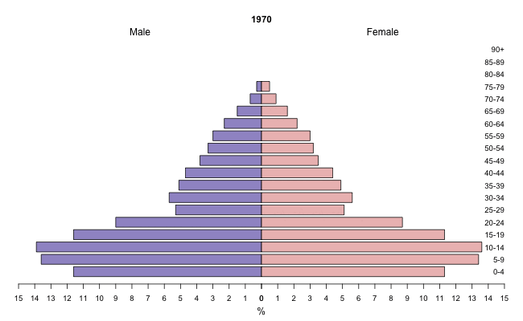

Singapore Population Pyramid (1970-2024)
Why Animate a Population Pyramid?
A pyramid chart is essentially two bar charts joined by a central axis, typically comparing groups like male and female. When animated, the shifting “silhouette” of the bars makes it much easier to track the momentum of demographic changes over time—such as a “bulge” of baby boomers moving through the age brackets or the narrowing base of a declining birth rate.

How it was made
The data preparation was handled in Python to calculate percentages and sex ratios, while the animation was generated using the plotrix and animation packages in R.
Data Preparation (Python)
import pandas as pd
def process_data(csv_file):
population = pd.read_csv(csv_file)
total_population = (
population
.groupby('year')
.agg({'total_pop':'sum', 'male_pop':'sum', 'female_pop':'sum'})
.rename(columns={'male_pop':'total_male_pop', 'female_pop':'total_female_pop'})
.reset_index()
)
df_merged = (
population.merge(total_population[['year', 'total_male_pop', 'total_female_pop']], on='year', how='left')
)
df_merged['male_pct'] = ((df_merged['male_pop'] / df_merged['total_male_pop']) * 100).round(1)
df_merged['female_pct'] = ((df_merged['female_pop'] / df_merged['total_female_pop']) * 100).round(1)
df_merged['sex_ratio'] = ((df_merged['male_pop'] / df_merged['female_pop'])*100).round(1)
df_merged = df_merged[['year', 'age', 'total_pop', 'male_pop', 'female_pop', 'male_pct', 'female_pct', 'sex_ratio']]
df_merged.sort_values(by=['year', 'age'], ascending=[True,True])
df_merged.to_csv('population_SG.csv', index=False)
process_data('Book1.csv')Animation Script (R)
library(plotrix)
library(animation)
population <- read.csv("population_SG.csv", stringsAsFactors=FALSE)
population <- population |> sort_by(~ list(year))
ages <- unique(population$age)
ani.options(outdir = paste(getwd(), "/images", sep = ""))
saveGIF(
for (y in unique(population$year)) {
pop_year <- subset(population, year == y & age %in% ages)
female <- pop_year$female_pct
male <- pop_year$male_pct
par(cex=0.8, mar=c(5, 4, 6, 2))
pyramid.plot(
male,
female,
top.labels = c("Male", "", "Female"),
labels = ages,
main = y,
lxcol = "#A097CC",
rxcol = "#EDBFBE",
xlim = c(15,15),
gap = 0
)
text(x = 0, # Center position
y = -18, # Position below the plot
labels = "Source: SINGAPORE DEPARTMENT OF STATISTICS",
cex = 0.8, # Text size
adj = 0.5) # Center alignment
}, movie.name = "population-pyramid-animated.gif",
interval=0.15, nmax=100, ani.width=650, ani.height=400
)